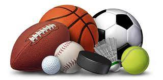
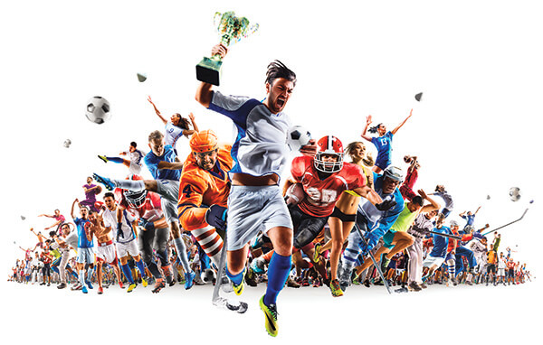

Benvenuto nel Mondo dello Sport!
Lo sport è una pratica umana che unisce movimento fisico, competizione e divertimento. Attraverso attività organizzate e regolate da specifiche regole, lo sport coinvolge individui o squadre nella sfida per raggiungere obiettivi prefissati. Oltre a promuovere la salute fisica, lo sport favorisce lo sviluppo di abilità mentali e sociali, contribuendo alla formazione di valori come il fair play e la lealtà. Inoltre, esso può essere un potente strumento di coesione sociale, unendo persone di diverse età, culture e background attraverso una passione condivisa. In sintesi, lo sport rappresenta un'importante manifestazione dell'energia umana volta a esplorare e superare limiti, sia fisici che mentali.
Quando smetti di allenarti avvengono molti cambiamenti fisiologici.Inizi a perdere i progressi cardiovascolari che avevi ottenuto (l’abilità del cuore di pompare sangue più efficientemente), la capacità del corpo di utilizzare i carboidrati come carburante e la capacità muscolare di utilizzare l’ossigeno.Tutti i miglioramenti che hai visto sulla pressione sanguigna, sui livelli di colesterolo e di glicemia andranno persi. In particolare, se ti concentravi sui allenamenti di forza, il volume muscolare, la forza e la resistenza si ridimensioneranno.

Gli sport più diffusi variano a livello globale, ma alcuni godono di grande popolarità in molte parti del mondo. Calcio, basket, tennis, atletica leggera e nuoto sono tra gli sport più praticati su scala internazionale. Tuttavia, la diffusione di sport può variare in base alla regione e alle preferenze culturali, con esempi come il baseball in America del Nord, il cricket nel subcontinente indiano e il rugby in alcune nazioni. Inoltre, sport come il ciclismo, il golf e il fitness hanno una vasta partecipazione in molte comunità.